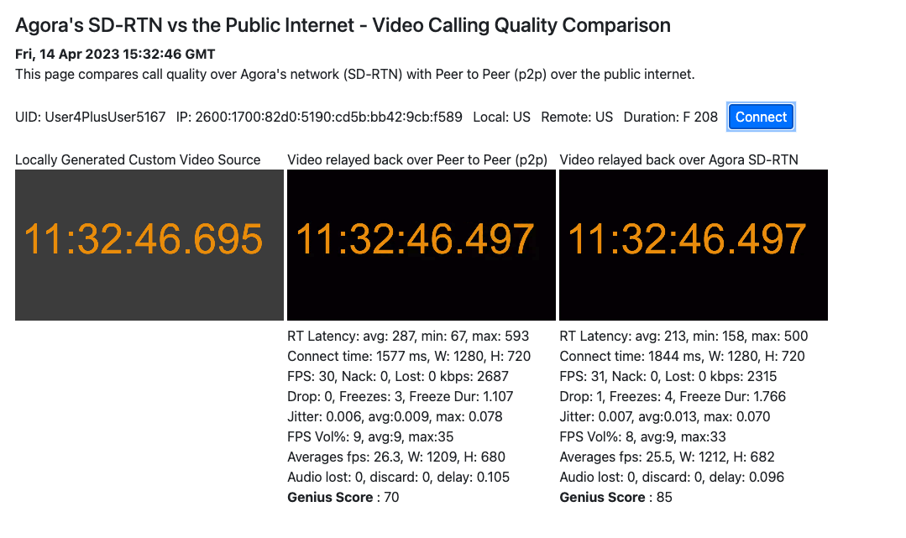

Generate a pair of links to test SD-RTN vs P2P
- and share it with a friend using something like slack or email.
- Ask your friend to open the link in Google Chrome on desktop or laptop.
- Once open you can Open The Primary Link In A New Tab
- Notes:
- The CONNECT button on the primary link will take about 10 seconds to enable.
- Once enabled press the CONNECT button and allow the test to run for 3 to 5 mins.
- Once complete share a screen shot of your browser which will look like the picture below.
Example Output To Share
